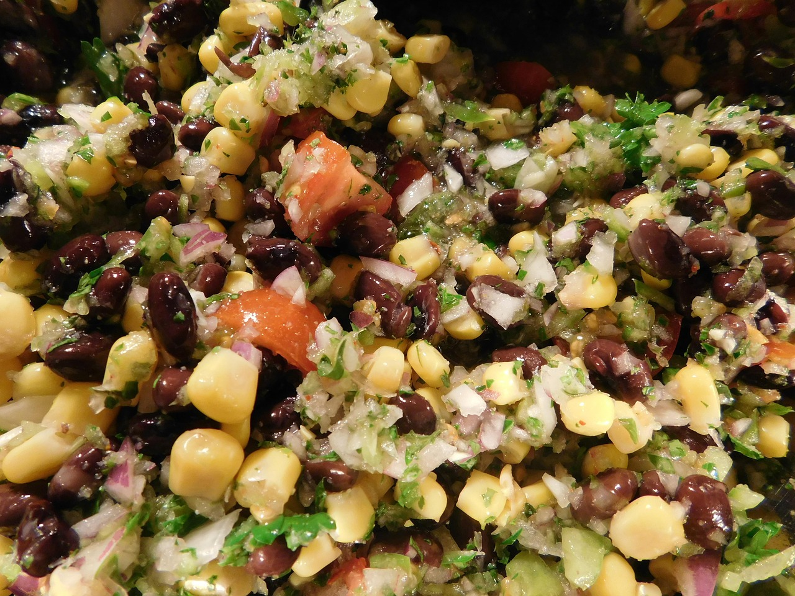

Description
A simple salsa that is delicious as a topping or just by itself with chips.

Ingredients
- 1 can tomatoes
- 1 cup corn
- 1 can black beans
- 1 tbl red wine vinegar
- 1 tbl southwest spice mix
- 1 tbl oil
- 1 avocado
- salt to taste
Steps
- Mix together the tomatoes, corn, black beans, vinegar, spice mix, and oil.
- Cut avocado into small cubes.
- Stir in the avocado and salt to taste.
Note: Refridgerate until ready for use.